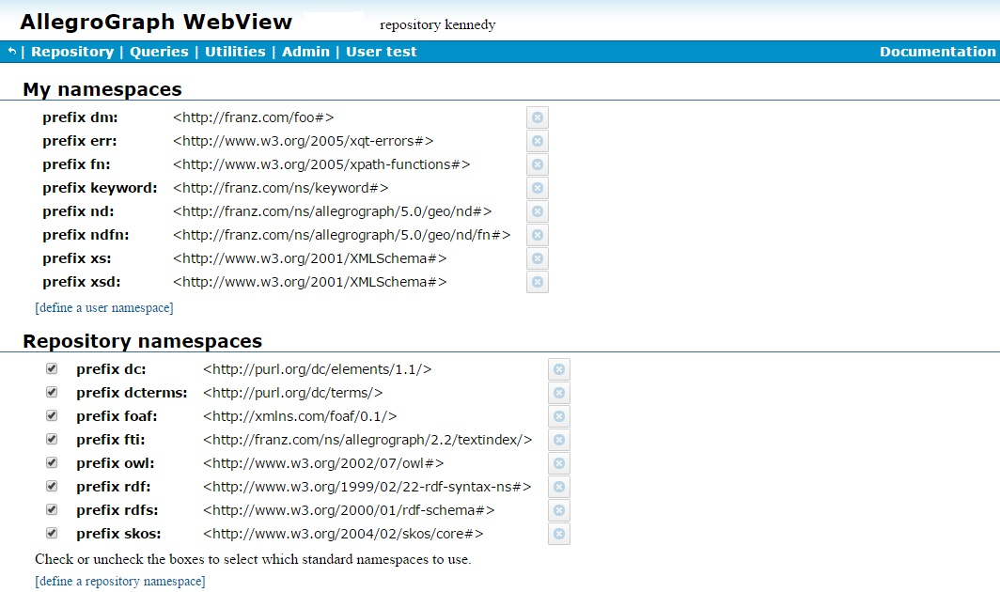
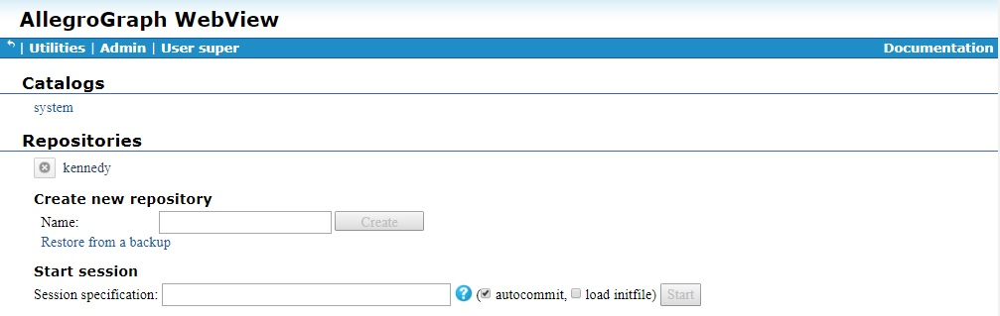
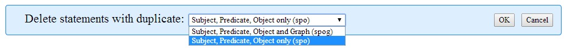
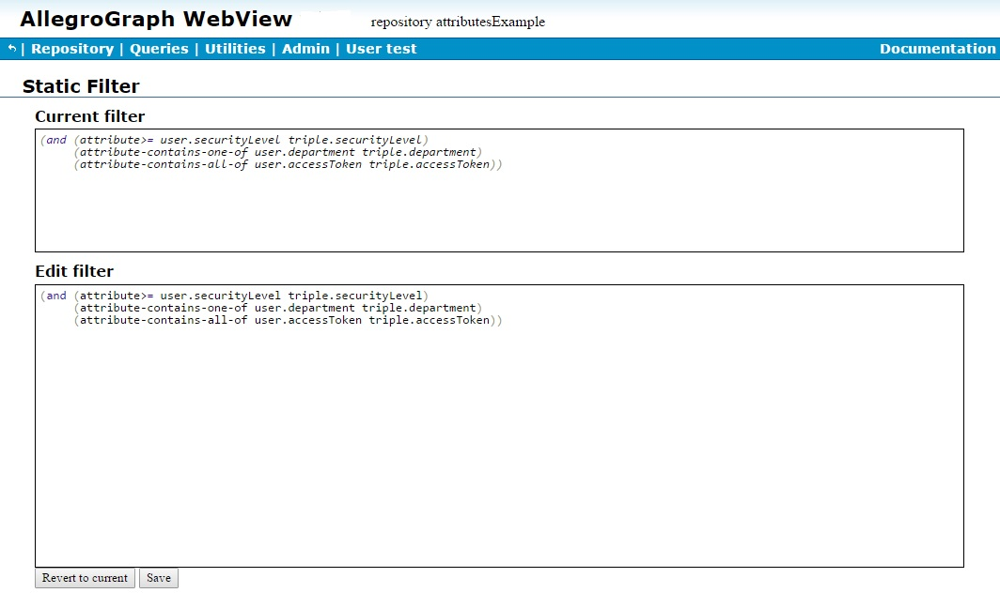
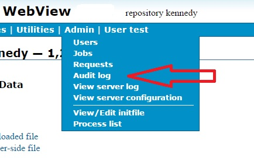
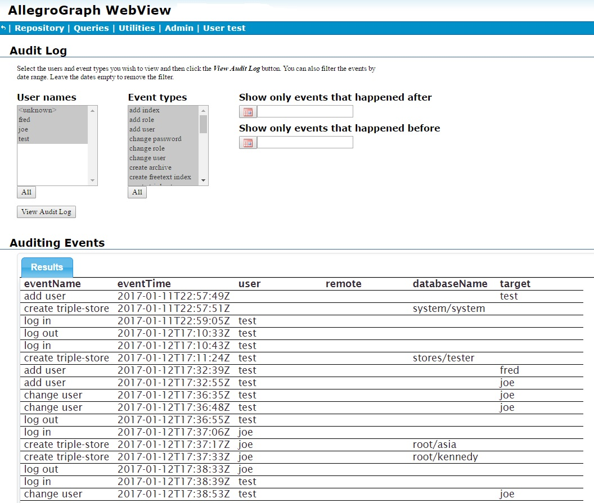
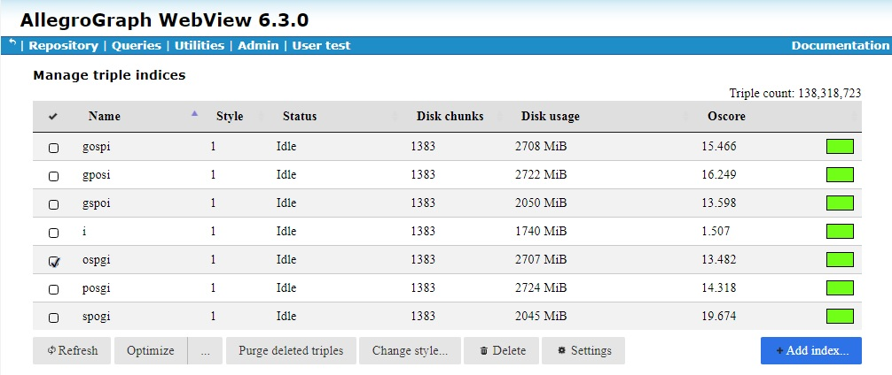

Introduction
AllegroGraph WebView (AGWebView) is a graphical user interface for exploring, querying, and managing AllegroGraph repositories. AGWebView uses AllegroGraph's HTTP interface to provide these services through a web browser.
Using AGWebView you can:
- Browse available catalogs and repositories
- Create (also delete) a repository
- Load RDF data into a repository, or into a specific graph of a repository.
- Configure triple indices for a repository
- Set up free-text indexing for a repository
- Issue SPARQL and Prolog queries, which can be saved and reused
- Walk from query results to related triples and resources
- View, add, and delete namespaces
- Manage AllegroGraph users and "roles," and their access to repositories
- Capture a query as a web URL for embedding in applications
- Apply Prolog rules and functors to repositories
- Open sessions for commit and rollback.
- Activate RDFS++ reasoning on a repository
- Federate local and remote repositories into a single point of access
- Open telnet connections to AllegroGraph processes for debugging
- View graphs of "construct" and "describe" SPARQL query results
Supported browsers and versions
AGWebView will work with the following browsers on the noted platforms. As with many browser applications, some or all of AGWebView's features may work on other browsers or in other versions, but these have not been tested. In general, we will not fix problems with an earlier version than listed of a supported browser on the platforms noted, but will try to fix problems on later versions released after this list was prepared, if they occur. Sometimes a new version of AllegroGraph is needed so that AGWebView will work with a new version of a browser.
| Browser | Earliest Supported Version | On Platforms |
|---|---|---|
| Chrome | 40.0.2214 | Mac OS X, Windows, Linux |
| Firefox | 38.0 | Mac OS X, Windows, Linux |
| Internet Explorer | 11 | Windows |
| Safari | 7.1 | Mac OS X |
Starting AGWebView
AGWebView is a part of AllegroGraph server. When the server is running, AGWebView may be opened by typing the server's IP address and port number into the address field of a web browser:
http://localhost:10035 Logging in
If there is an AllegroGraph server listening on that port, AGWebView will respond immediately with a login form:
If you are exploring AGWebView for the first time, log in using the name and password of the AllegroGraph superuser you created during server installation. In Franz's documentation this user is usually described as "test" with password "xyzzy".
Once logged in you can create additional user accounts with different types of access and privileges.
Data Display Conventions
Much of the AGWebView interface is concerned with the "parts" of triples, which are composed of Uniform Resource Identifiers (URIs) and literal values.
In AGWebView, URIs consist of a namespace and a local name enclosed in angle-brackets <>.
<http://franz.com/examples#Alice> where http://franz.com/examples# is the namespace, and Alice is the local name.
By default, the AGWebView interface removes the namespace and displays only the local name. This produces query results that are easy to read:
For more detail, you can use a checkbox in the upper right corner of the AGWebView screen to turn on the "long parts" feature to see the full URIs:
AllegroGraph supports many types of literal values, as shown in our java tutorial. Literals generally appear as quoted strings in the AGWebView interface:
The "42" in the above image looks like a string but it is actually a xsd:long (a high-precision integer). To see the types of your literals, invoke the "long parts" feature again:
Managing Namespaces
The difference between the "short parts" and "long parts" displays shown above is the suppression of the URI namespace in the condensed displays. This makes the output easier to read.
We can also use namespaces for input. To make it easier to type in lengthy URIs, AllegroGraph provide a set of shared namespace abbreviations. These namespaces make it much easier to set up queries or to assert new triples by hand. These are the shared namespaces in AGWebView:
rdf: <http://www.w3.org/1999/02/22-rdf-syntax-ns#>
rdfs: <http://www.w3.org/2000/01/rdf-schema#>
owl: <http://www.w3.org/2002/07/owl#>
dc: <http://purl.org/dc/elements/1.1/>
dcterms: <http://purl.org/dc/terms/>
foaf: <http://xmlns.com/foaf/0.1/>
fti: <http://franz.com/ns/allegrograph/2.2/textindex/>
skos: <http://www.w3.org/2004/02/skos/core#> These namespaces are available to every user in every repository.
In addition to the shared namespaces, you can create custom namespaces in a repository. Some of these are shared, meaning that any user with access to the repository can use them. There are also private namespaces that are available only to a single user.
The list of namespaces is displayed by the Utilities | Namespaces menu choice when on a Repository page.
This displays the list of all available namespaces, whether they are in use or not. The define a user namespace and define a repository namespace links below the lists let you add a new namespaces.

You can also display the list of namespaces on the New Query page of a repository. Look for the "Show namespaces" link to the right. This is the list of shared and private namespaces that are available to that query. On this page the "add a namespace" link lets you create a new private namespace owned by the current user. When you show namespaces, there is a delete button to the right of each namespace allowing you to delete that namespace.
To create a namespace, simply click one of the "define namespace" links and then fill out the form:
Then to use the namespace, type it into an input field with the required colon (:) and the local name of the resource.
AGWebView will automatically expand the full URIs behind the scenes.
Modifying a namespace: If you wish to modify a namespace, so that a prefix expands to a different value, you must delete it first (using the Delete button to the right of the namespace list when Show Namespaces is chosen or the Delete button next to the namespace displayed with the Namespaces choice on the Utilities menu) and then add it back with the revised value. It is an error to try to add a namespace with a prefix already in use.
Managing Users and roles
AGWebView provides an interface for managing users and roles. Management takes place on the User page displayed (for superusers) by the Admin | Users menu item:

Please see the Managing Users document for further information. The AGWebView interface is described in detail in that document along with the equivalent agtool user and agtool role commands.
SPARQL Queries
The reader might appreciate some "seed" queries to help get started with SPARQL. Note the use of curly braces {} instead of parentheses () in SPARQL queries.
"Show the subject and object values from fifty rdf:type triples." This returns only the values you ask for.
select ?s ?o where {?s rdf:type ?o} limit 50 "Construct fifty new triples from values found in existing triples." This returns a set of actual triples, sometimes called a "graph."
construct {?s ?p ?o} where {?s ?p ?o} limit 50 "Describe a resource to me." Note that this query returns all triples that describe a specific resource, including those obtained by traversing a blank node.
describe ?s where {?s ?p ?o} limit 1 Prolog Queries
The user account must have permission to "execute arbitrary code" in order to execute a Prolog query.
AllegroGraph provides "select" queries as an extension to its internal Prolog language. This is a simple Prolog query. Note the use of parentheses () instead of curly braces {}, and that the triple patterns begins with a "q". Also, namespace abbreviations must be preceded by a bang (!) character.
(select (?s ?o) (:limit 10) (q ?s !rdf:type ?o) ) This query returns subject and object values for ten triples that contain an rdf:type predicate.
Prolog "select" queries are the portal to AllegroGraph's geospatial and social-network features.
Session Specifications
The AGWebView interface allows the advanced user to create a new "session." It offers you an empty text field (on the Root Catalog page) to enter your "session specification."
This is a powerful tool for creating complex federated repositories, with reasoning and graph filtering applied to the individual repositories of the federation.
For instance, this specification federates a reasoning version of repository "A" in the root catalog with a reasoning version of the "http://example.com/graph1" graph of repository "B" in the "public" catalog:
<A>[rdfs++] + <public:B>{<http://example.com/graph1>}[rdfs++] In a session specification, local repositories are written as <catalog:name>, or just <name> for repositories in the root catalog.
Remote repositories are written by putting their URL between < and >.
Multiple repositories can be federated by putting plus signs (+) between them. For example, <repository1> + <repository2>.
To apply a reasoner to a repository, write [rdfs++] or [hasvalue] after it.
To create a filtered repository, write the URIs of the participating graphs between braces {}, using null to indicate the default graph.
The Session Specification field has an "autocommit" checkbox next to it. Uncheck this box to create transaction semantics, where you can manually issue "commit" and "rollback" actions as needed. Look for them in the Session menu, up in the page banner. Note that with the optional Sesame 2.7 transaction handling semantics, autocommit reverts to true after a "commit" or a "rollback".
Free-Text Indices
AllegroGraph supports multiple free-text indices, each targeted as narrowly as you like on specific fields of specific predicates.
The form for creating a free-text index is on the Free-Text Indices page.
Each free-text index has a name, so you can apply it to a query or perform maintenance on it.
Each index works with one or more specific predicates, including an option to index all predicates.
An index can include all literals, no literals, or specific types of literals.
An index can process the full URI of a resource, just the local name of the resource (after the # or /), or it can ignore resource URIs entirely.
An index can focus on any combination of the four parts of a "triple:" the subject, predicate, object, and graph.
Stop words (ignored words) may be specified, or the index can use a default list of stop words.
In addition, an index can make use of word filters such as stem.english or drop-accents.
WebView User Interface
This section provides a page-by-page summary of the AGWebView user interface.
Banner
There is a blue header across the top of most AGWebView pages. This banner displays the name of the logged-in user and offers context-specific controls that let you "back out" to previous pages or to access general functions such as "logout". The illustration just shows a possible banner. Because available choices are displayed according to the context, not all choices are shown in this illustration, and some that are shown, you may not see. You will see other banners in other illustrations.
- (Backarrow)
- The curly backarrow symbol lets you go back a level in the hierarchy of AGWebView pages.
- Repository
- This choice returns you to the current repository page.
- Queries
- This choice displays a menu of query choices, including:
- New: Display the Query page
- Saved: Display saved queries, if any
- Recent: Display recent queries
- Free text: Allow searches in free text indices, if any
- Utilities
- This dropdown menu gives access to various utilities. Some choices may be grayed out (and thus non-operational) if they do not apply. Choices include
Scripts: This link displays Server Scripting page. Only users with Eval access will see this item (see the Evaluate Arbitrary Code user permission in the General permissions section of the Managing Users document for information on Eval access). This allows loading or defining User scripts and Site scripts. See the Scripting the server section in the REST/HTTP interface document for information on scripting.
Namespaces: This link displays the Namespace Selection page.
- Geospatial Datatype Designer: This link opens the Geospatial Datatype Designer page (see the WebView Geospatial Datatype Designer section in the N-dimensional Geospatial Usage Guide and Example document.
- Settings: This link displays a settings page. See the settings page.
- View Server Load: This link opens the Server Load page.
- Admin
- This is a drop-down menu offering various options to the AllegroGraph superuser only (non-superusers do not see this menu):
- Users: This link opens the User Management page.
- Jobs: This link opens the jobs page.
- Requests: This link displays the Requests page.
- Audit log: This link opens the Audit Log page.
- View server log: This link opens the server log.
- View server configuration: This link opens the configuration file (see Server Configuration and Control).
- View/Edit initfile: This link opens the Initfile editing page.
- Processes: This link opens the Processes page.
- User
- This is a menu that drops down from the name of the current user offering:
- change password
- logout: The current user logs out.
- delete: The current user has an opportunity to delete his/her own account.
- Session
- When you have opened a transaction session in a repository, a session menu appears in the banner.
- commit lets you take all of the triples you have loaded or created up to this point, and add them permanently to the repository.
- rollback lets you discard all uncommitted triples, presumably because your load was interrupted and you want to start over.
- close terminates the session.
The settings page
The settings page is displayed when you select the Utilities | Settings menu choice. There are two tabs. The Server tab:
This tab allows you to specify a message to be displayed when the system detects that a large operation has been requested. Large operations are backup, data export, and query download. The warning message is displayed for all those operations.
Here we add a large operation warning (About to perform a large operation!!!):
Then, when we execute a query and click on the Download button at the bottom, the warning dialog is displayed and the user is offered the opportunity to cancel the operation:
If the large operation warning is blank (as it is initially and is if all text is deleted from the settings box), no warning is displayed and the user is not given to opportunity to cancel.
Here is the Browser Session tab:
This tab displays browser display options, including whether to display full URIs and whether to show graphs.
User Management Page
Superusers can access the User Management page by choosing Users from the Admin menu.
See the Managing Users document for an explanation of user management.
The User Management page lists users and roles (in the illustration, there are two users, test and anonymous, and no roles). There are links to add, edit, and delete users. Clicking on edit displays the following:
Again, see the Managing Users document for more information.
The Requests page
This page, displayed by the Requests choice on the Admin menu, and available to superusers only, displays the recent HTTP requests received the server.
The various buttons control what is displayed. Reset view restores the view to its default settings. Set page size determines how many requests to display. Set column visibity allows you to hide columns. (Besides Server, Status, Method, and URL, all visible in the illustration, there are columns for Source IP:port, Started, Finished, and Duration.) Use local timezone toggles times, usually displayed in GMT, to local time. Save to CSV saves the data to a CSV file. Refresh redisplays the table.
Active requests are displayed in green, requests that completed successfully are black, and requests that failed are displayed in red. The Search box can be used to narrow the display to rows which have text which matches the search text. Clicking on a column heading sorts by that column. Additional clicks toggle between ascending and descending sorting.
Root Catalog Page
The Root Catalog page is the top-level page for the AGWebView interface. We call it the "Root Catalog" page because it lists the repositories of the root catalog. It also lists the names of any named (non-root) catalogs that are present. This page lets you choose a repository to manage.

This is the page you see when you log into AGWebView. Later you can return to this page by clicking the "<<" link in the page banner until the focus returns to the top level.
- Catalogs
- These are the non-root catalogs of the system. Click on one to see the repositories it contains.
- Repositories
- These are the repositories of the root catalog.
- Create a Repository
- Create a new repository in the root catalog. Note the repository name cannot contain any of the following characters:
\ / ~ : Space $ { } < > * + [ ] | - Start session
- This field lets you create an arbitrarily complex federated repository. See Session Specification earlier in this document.
Named Catalog Page
From the top-level Root Catalog page, click on any non-root catalog. This opens a Named Catalog page. This page lists all the repositories that are available within that catalog. Note that this page has the name of a specific catalog at the top (tests in the illustration.).
The various links include:
- Repositories
- These are the available repositories within this catalog. Clicking on one displays its Repository Overview page.
- Create a Repository
- Create a new repository in the current catalog. Note that the system catalog is reserved and users cannot create repositories in it.
- Start session
- This field lets you create an arbitrarily complex federated repository. See Session Specifications earlier in this document.
Repository Overview Page
The Repository Overview page gives you access to a specific repository within a specific catalog. The name of the repository is posted under the banner. The catalog, if it is not the root catalog, is also shown under the banner.
This illustration is when the logged in user have superuser privileges and therefore everything is available. Users with fewer privileges will not see certain items on the page. (For example, a user who does not have permission to start a session will not see the Start a session choice.) If you do not see a described choice, it is likely because you do not have permission to make that choice.
Edit Description
This link lets you create a brief text description of the repository.
Load and Delete Data
This group of choices allows you to add or triples.
- Add a Statement
- This link opens a form to let you enter the subject, predicate, and object URIs of a new triple. You may optionally add a context (graph) URI. There is a drop-down list of existing graphs. You may also add attributes. Attributes must be defined in the repository before being used. See Manage attribute definitions below. Attributes must be specified using JSON object syntax. The illustration shows an example.
- Delete Statements
- Enter any combination of URIs, wildcards, and literals into the fields of the form. Click OK to delete all matching statements from the repository. Caution: There is no way to undo this action.
- Import RDF
- The choices allow you either to select a file and load it into the repository. or to open a text widget and enter triple data directly.
- Import RDF from an [uploaded | server-side] file
- The choices from an uploaded file and from a server-side file open a file select dialog. The dialog displayed by the from an uploaded file choice is displayed below. If you click the Choose Files button, the file choice dialog initially displays the server installation directory's tutorial/ subdirectory (if it is in the expected place -- otherwise it displays the installation directory itself). Subsequent invocations display the last directory from which a file was loaded. See the tutorial directory section in AllegroGraph Quick Start for more information on the initial directory that will be displayed. The dialog displayed by the from a server-side file is similar except instead of a Choose Files button, it shows a widget showing the server-side directories and files.
The dialog has many options, many associated with options to the agload utility, described in the Data Loading document. Pop-up tooltips appear when you mouse over many of the options. Note that agload will be used when you select the Using agload file loading mode and but not when you select Transactional but the meaning of the other options is the same in either case. If you select Using agload, you can then specify how many agload processes will run. This specifies a value for the --loaders option to agload.
If you select Transactional, then the triples will be inserted within a single atomic transaction, which will either succeed completely or fail completely. This is suitable for small operations but not recommended for large data loads. agload loads and commits triples in batches so when it fails, some but not all triples will typically have loaded and committed. See the Data Loading document for more information on this point.
The options include:
format: the format of the data in the file. Choices include N-Triples, N-Quads, NQX (extended N-Quads with attributes), RDF/XML, Trix, TriG, and Turtle. See the input option to agload for more information. The default is Autodetect, which means get the format from the file extension (so an extension of ntriples or nt means an N-Triples file).
Context: the default graph for the triples being loaded if it is not otherwise specified (as it is in N-Quads).
Attributes: you can specify attributes which will be added to every triple which does not have attributes specified in the file (see the --attributes option to agload). Only NQX files can have attributes specified, so the attributes specified here are added to every triple in files other than NQX files. Attributes must be defined in the repository before being used. See Manage attribute definitions below. Attributes must be specified in JSON format, such as
{"bar": "high"}. See the Triple Attributes document for more information.Relax syntax: see the relax-syntax option to agload. If selected, data which looks okay but is in fact improper RDF (for example, contains trailing spaces or hyphens in blank node ids) will be accepted. We recommend correcting your data files so they are proper RDF, but this option is useful during development or when demo-ing so that nearly correct data can be loaded.
File loading mode: Multi-core uses agload and is possibly faster. Single-threaded means use one core only and a simpler loading program.
Error handling: see the error-strategy option to agload. Cancel load means if an error is encountered, cancel the load. Note that triples already loaded will not be removed. Ignore errors will attempt to continue upon an error, so if one triple is mangled, it will be skipped but the remaining will be loaded, if possible.
Use bulk load mode: see the bulk option to agtool load. Enable bulk mode while processing the loading job. Bulk mode turns off transaction log processing and can provide considerable performance gain for large jobs. Warning: transaction log processing is turned off for the entire database (not just you loading this file). Other users may be affected. The database may be irrecoverably corrupted if something goes wrong. Use this option with care! This option is invalid when loading triples into a replication instance (see the Multi-master Replication document) as replication depends on complete transaction logs. Specifying this option will cause the load to fail with an error message.
- Import RDF from a text area input
- This choice displays the text input dialog shown in the illustration:
- Type or paste data into the input area (several lines from the N-triples file kennedy.nt are shown in that area -- the kennedy.nt file is an example file supplied with the AllegroGraph distribution). The text format must be syntactically valid for the format selected in the Format box. If the Format is Autodetect (as in the illustration) then various formats are tried until one works. As we said above, the text in the illustration is in N-triples format. The other options are similar to the file loading options described above. Click OK to load the data.
Explore the Repository
These choices allow you to view triples and other data in the repository.
- View triples
- Executes a SPARQL query that displays the first 1000 triples it finds. The purpose of this feature is to give you a quick look into the repository. (If the Limit to 1000 results checkbox on the right of the New Query Page is unchecked, all triples are displayed.)
- View quads
- Executes a SPARQL query that displays the first 1000 triples it finds and shows the graph of each triple. If no graph is shown, it means the triple uses the default graph. The purpose of this feature is to give you another quick look into the repository. (If the Limit to 1000 results checkbox on the right of the New Query Page is unchecked, all triples are displayed.)
- View repository's classes
- Executes a SPARQL query that displays the first 1000
rdf:typeclasses in the repository. (If the Limit to 1000 results checkbox on the right of the New Query Page is unchecked, all classes are displayed.) - View repository's predicates
- Executes a SPARQL query that displays the first 1000 predicates found in the repository. (If the Limit to 1000 results checkbox on the right of the New Query Page is unchecked, all predicates are displayed.)
- View repository's named graphs
- Executes a SPARQL query that displays the first 1000 named graphs found in the repository. (If the Limit to 1000 results checkbox on the right of the New Query Page is unchecked, all named graphs are displayed.)
Reports
These choices display report windows providing information on storage use by the current repository. Three reports are directly linked and the fourth link goes to a page linking to all the other pages.:
- Storage report
- Display a Report page with a pie chart showing disk usage. The slices of the pie chart link to other Report pages. See The Reports pages for more information.
- Triple indices
- Display the storage Report page for triples indices. See The Reports pages for more information.
- String table
- Display the storage Report page for the repository's string table. See The Reports pages for more information.
- Full list of reports
- Display a page with links to all report pages. See The Reports pages for more information.
Replication Control

This link is not shown in the illustration above. It only appears when the repository being described on the page is an instance of a multi-master cluster. See Managing Clusters Using AGWebView in the Multi-master Replication document for information on using this link.
Repository Control
This section of the Repository Overview page lists various operations that can be performed on the repository. Many operations call functions in the Lisp API, which are linked to. Operations are generally only displayed if the current user has permission to execute them. All operations (those that are seen by a superuser) are documented. If you do not see an operation, it means you do not have permission to execute it.
- Export
- You can dump the repository to a file, using any of these RDF formats:
- N-Triples
- N-Quads
- NQX
- RDF/XML
- TriG
- Turtle
- Start a Session
- This link starts a dedicated session in this repository, which establishes transaction semantics. A Session menu will appear in the banner, offering Commit and Rollback links. Commit takes all changes (triple adds and deletes) since the last commit or rollback and makes them permanent in the repository. Rollback discards all uncommitted changes. The menu also offers a Close link, which ends the session.
- Warmup store
- This link displays the following dialog and allows you to warmup the current repository. When you warmup a repository, triple and/or string data is loaded into memory (from disk). This makes it likely that subsequent queries will execute more quickly. You can choose to warmup triples, strings, or both.
- Convert store to a replication instance
- AllegroGraph supports multi-master replication where there are several instances of a repository together in a replication cluster (sometimes shortened to cluster when the context is clear). Triples can be added or deleted from any instance in the cluster, with the additions and deletions propogating to the other replicas. If this choice is present, the current repository is not part of a replication cluster. If it were, this link would not appear and the Replication Control section described above (but not appearing in the main illustration) would appear instead. See Using AGWebView to create a cluster in the Multi-master Replication document for information on using this link.
- Control Replication
- See the document on Replication and Warm Standby. See also Replication below. Note that the replication referred to is single-master replication, not multi-master replication mentioned in the link just above.
- Back-up this repository
- Initiate a backup.
- Export duplicate statements
- Serializes a list of duplicate triples to a file in Nquads format. The duplicates can be SPO-identical (ignoring the graph) or SPOG-identical (considering the graph). Triples not visible to the current user will not be written. The triples written to the file will be the triples deleted if duplicates are deleted (prior to the next commit, which may change what are and what are not duplicates). See Deleting Duplicate Triples.
- Delete duplicate statements
- Performs a one-time removal of duplicates from the repository. A pop-up window allows you to chose whether two triples that share subject/predicate/object (spo) are considered duplicates or only triples that share subject/predicate/object/graph (spog).
- 
- See Deleting Duplicate Triples.
- Suppress duplicate statements
- Set the duplicate suppression strategy. That instructs AllegroGraph about triples being committed. The choices are ignore duplicates, suppress (i.e. delete) duplicates which share subject/predicate/object (spo), or suppress duplicates which share subject/predicate/object/graph (spog). Already committed triples are not affected by this command. See delete-duplicate-triples.
- Optimize the repository
- When clicked, the repository is optimized. Adding new triples or deleting existing ones slows things down after optimization, so you typically optimize when you are not adding or deleting triples, and re-optimize after later additions or deletions. Optimizing will organize and index the existing triples for optimal query performance. Enabling may take a long time on big repositories; [running] is displayed after the link while optimization is going on and disappears when complete. (It is not an error to add or delete triples while optimization is going on, it just reduces the effect of optimization.) See optimize-indices. Clicking this option optimizes at level 2.
- Recognize geospatial datatypes automatically
- If checked, then when triples are being added from an external source (e.g. a N-triples file or a SPARQL INSERT), the loader will check whether the leading portion of the type URI matches an AllegroGraph geospatial type. (Both the old 2D and new nD types are checked.) If so, and if the type has not yet been encountered in this repository, the subtype is reconstructed from the type string and automatic predicate and datatype mappings are added to the repository. See The WebView Geospatial Datatype Designer in the N-dimensional Geospatial Usage Guide and Example document for details.
- Control durability (bulk-load mode)
- If bulk-load mode is turned on, logging of modifications to the repository is suppressed and so, at a minimum, full recovery is not possible in case of an AllegroGraph or system crash (as unlogged modifications cannot be recovered). Loading of triples is consequently faster. Use care when enabling bulk-load mode. A crash while in bulk mode will likely result in an irreparably corrupted database, in which case restoration from a backup will be necessary. Be prepared for that possibility if you enable bulk-load mode. Clicking on this option displays the current mode and allows you to change it. Bulk-load mode is not permitted when loading into a replication instance (see the Multi-master Replication document) as replication depends on complete transaction logs. Specifying this option will cause the load into a replication instance to fail with an error message.
- Manage attribute definitions
- Displays a dialog which allows you to define attributes (you must have superuser privileges). When first displayed, only the buttons (Add New, Save, and Revert) and the documentation appear. Clicking on Add New displays fields to fill in, as shown in the illustration. The documentation text describes how to input a definition. See the Defining attributes section for information on the various options. See the Attributes example below for more information.
- Set static attribute filter
- Displays a dialog which shows the current static attribute filter, if any, and allows adding a filter or editing the existing filter. See the Attributes example below for more information.
- Manage triple indices
- This link displays the Manage triple indices page, which lists all triple indices and allows addition of new indices and management of existing ones.
- Manage free-text indices
- This link takes you to the Free-Text Indices page. See the section on Free-Text Indexing, above. Once you have created a free-text index, you can use the Queries menu to initiate a text search.
- Materialize Entailed Triples
- When you click on Materialize Entailed Triples, you will get a dialog at the top of the screen which allows you to enter specifications for materialization. Each of the fields has help text. When materialization is done, a message is added to the message area which reports the number of materialized triples added. See Materializer for information on materialization.
- Delete Materialized Triples
- Deletes any previously materialized triples. Upon completion it reports in the message area the number of triples removed.
- Manage external Solr free-text indexer
- This link lets you set up a connection to the Apache Solr full-text indexer from an AllegroGraph repository. See Solr Text Index.
- Manage external MongoDB connection
- This link lets you set up a connection to a MongoDB from an AllegroGraph repository. See MongoDB interface.
- Shutdown instance
- Makes the repository instance shut down and its child processes exit instantly once the repository is no longer used. This option is for administrators and is not typically needed by ordinary users.
Free-Text Indices Page
One reaches the Free-Text Indices page by clicking "Manage free-text indices" on the Repository Overview page.
This displays the Free-text indices page for the repository. In the illustration, we have one such index, named myindex, which we created by accepting all the default values and settings.
To create a new index, type its name into the field at the bottom (indicated by the red arrow). Remember that there might be many indices, so the name should be fairly specific. We have chosen the name long-word-index (because we only index words 10 characters or more long -- see the Minimum word length field indicated by the red arrow in the dialog below). Click the "Create" link and the following dialog is displayed:
See the Free-Text Indices section for a discussion of the various options. Click OK at the bottom to create the index.
When you create a new index or edit the parameters of an old one, AllegroGraph will reload the triples to bring the index up to date.
An example of defining attributes and static filters
There is a general attributes/static filter example found in java-tutorial/AttributesExample.java. Currently, all that can be done in WebView is define attributes and static filters. Currently in AGWebView there is no way to associate attributes with a user. Thus if a static filter restricts access to triples, no user can see those triples in AGWebView. They can be seen using other tools, as the Java example shows.
Further, if an attribute is defined with Minimum number greater than 0, then no triple can be loaded into the repository without that attribute having a value (actually, the required number of values).
These two lines from the repository view have to do with attributes and static filters:
Clicking on Manage attribute definitions displays a dialog which allows attribute definitions. Here we have filled in the fields from the example referenced above:
Because securityLevel has min and max 1, there must be exactly one of these attributes for every added triple.
Similarly, clicking on Set static attribute filter displays a dialog allowing the filters to be defined. Here we define the filter from the example:

We pasted the definition into the Edit filter area and clicked on Save, and it appeared in the Current filter area.
New Query Page
From the Repository Overview page, click the New link in the Queries menu. This exposes a page where you can edit a SPARQL or Prolog query to run against this repository.
See the sections on SPARQL Queries and Prolog Queries for example queries to get you started.
This page lets you edit a new SPARQL or Prolog query and test it against the repository. The query (as shown below) goes in the (blank in the first picture) Edit Query field. The various options and buttons work as follows. Note that Anonymous users do not have all options and may not see what a regular user sees.
Results are displayed under the Edit Query field, as illustrated below.
- Language
- The Query page accepts SPARQL queries from all users. Users with permission to execute arbitrary code also have the option of issuing Prolog queries.
- Limit to 1000 results
- If checked (as it is by default), a maximum of 1000 results will be displayed. If unchecked, all results (no matter how many) will be displayed. Use care when unchecking this for large databases as there may be very many results. A LIMIT clause in the query can also limit results (as shown in the example below, where a LIMIT of 1 is specified). The number of results displayed is the minimum of the actual number of results, the LIMIT specified in the query, and 1000 if this option is checked.
- Reasoning, Long parts, Graphs check boxes
- When checked, enable reasoning, display full URIs when showing parts, and show graph names, respectively.
- Show namespaces
- Click this link to view the table of namespaces that are available to the current query. This could be a mix of shared and private namespaces.
- Add a namespace
- This link lets you enter a new, private namespace to use in this query. When you click this link, the following embedded dialog is displayed, allowing you to enter the namespace prefix and URI. The Bulk Input button allows you to enter multiple namespaces at once. Click this button to open an edit field where you can paste in many namespaces in one operation. Use one namespace per line, in a format like "ex http://example.com/" or "ex: http://example.com/". (Note that bulk is used by two utilities in different ways. In data loading (see Data Loading), bulk means loading data without transaction logging. In RDF4J and Jena and also here it means processing several statements at once but is not related to transaction logging or loading.)
- Modifying a namespace: If you wish to modify a namespace, so that a prefix expands to a different value, you must delete it first (there are Delete buttons next the namespaces) and then add it back with the revised value. It is an error to try to add a namespace with a prefix already in use.
- Permalink to query
- Click this link to generate a URL that invokes this query on this repository. You can publish this URL or embed it in software. Copy the URL from the browser's address field. Note that this URL requires anonymous access. If there is no anonymous account, AGWebView will require the user to log in.
The button along the bottom are:
- Execute
- The Execute button runs the query. A table of results will appear in the lower half of the page.
- Log Query
- Clicking this button executes the query and then displays information about the operation of the query. Note the query results are not displayed nor otherwise made available. To see them, you must click Execute.
- Show Plan
- Displays the query plan is the results area. The plan is pseudo-code which explains the process by which the query will be answered. There is an example below.
- Save As
- You can save a private copy of a query for later reuse. Give it a name and then click the Save button. To find this query again, click the saved link in the Queries menu in the page banner. The *Saved* choice only appears if there are saved queries.
(This feature is available to superusers, normal users, and self-registered users, but not to anonymous users.) - Add to Repository
- You can also "save" a query by adding it to the Repository Overview page as a link to a "Pre-defined Query." To do this, give the query a name and click the "Add to Repository" button. (Superusers can add a query to the Repository Overview page. All users, including anonymous, can then use it.)
- Edit Initfile
- This feature is available only to superusers. The "edit initfile" link opens a large edit field containing the text of the AllegroGraph server's initialization file, which is
/data/settings/initfile.
This code is run by AllegroGraph server each time a new session is opened. It lets you load Prolog functor definitions to use with your Prolog queries.
The Result field
Results are displayed in a table. Each URI in the table is a link to a page of information about how that URI is used in the repository.
- Download
- If your query produced triples as output (such as a SPARQL "construct" or "describe" query does), then this feature lets you save the results in one of four formats: N-Triples, N-Quads, RDF/XML, or TriX. If the results are just a list of variable values, like a SPARQL "select" query creates, you can choose between the SPARQL XML Result format and a comma-separate list of values.
The Cancel button
While a query is running, you see the word Loading and a spinning dots icon. Also, a Cancel button appears. You can click this button to stop the query. Stopping may take a few seconds. No results found will appear in the Results area when the query is stopped.
Saved Query Page
If you have saved named queries on the New Query page, you can retrieve them by clicking the saved link of the Queries menu in the page banner. This produces a list of your saved queries.
Note that each query in the list is followed by a small "x" character. Click this "x" to delete the query.
Recent Query Page
The Recent Query page contains a list of your recently-executed queries, which includes your saved queries plus any other queries you ran. The show 1000 results indicates the value of the Limit to 1000 results checkbox when the query was run (checked in the cases shown). It will say Show all results if the box was unchecked. You can uncheck the box, if desired, before running the query. Click on an entry in the list to re-run the query.
Text Query Page
The Text Query page is a free-text search form. You get to select the text index to use. If you have not created any text indices, the page will prompt you to do so. Searching here produces a table of matching triples.
Processes Page
This page lists the AllegroGraph processes that are currently running. It is used for debugging AllegroGraph behavior.
To reach this page, click the "Processes" link in Admin menu of the page banner. AllegroGraph can create many subprocesses.
- stacktrace
- This link displays the stacktrace of the process.
- kill
- This link kills the process.
- start telnet
- This link opens a telnet port directly into the eval command loop of the process. This lets an engineer interact directly with the process for diagnostic purposes.
Namespace Selection Page
- My namespaces
- These are namespaces that you have entered in the current repository for your personal use. Add namespace lets you add another namespace to the repository. The "x" icon after a namespace name lets you delete it from the repository.
- Standard namespaces
- These are the namespaces for this repository that are shared among users. Use the checkboxes to the left to enable or disable individual namespaces for this repository.
Replication Page
See the document on Replication and Warm Standby. If there is an active replication server available, this page lets you connect to it and set up a warm-standby repository on the local server.
Audit Log page
When auditing is enabled, AllegroGraph provides a structured system audit log which tracks important changes to the server and its repositories. This log is useful for system and database administrators conscious of security and performance.
Auditing is not enabled by default. In order to enable auditing (which must happen when the server is started), add the following line to the agraph.cfg file:
Auditing yes See Server Configuration for further information on the configuration file. Note that the Audit menu item and page described below will appear even when auditing is disabled, and information collected in previous runs with auditing enabled (and thus written to the audit log) may be displayed, but no new information will be stored when auditing is disabled.
In what follows, we assume auditing is enabled. Auditing is also discussed in the Auditing document, where the example below is repeated.
You can use the AG WebView interface to examine auditing information. Only superusers can look at the auditing information. There is an Audit log entry on the Admin menu on the WebView menu bar, as shown in the illustration:

If selected, the following page is displayed:

No information is displayed because we have not requested any (and, in fact, the page was displayed immediately after a fresh startup so there is no information to display).
After we have, as superuser test, added two users (fred and joe), the updated page (looking at actions by test, as test is selected, and event add user) shows when those users were added and by whom. Information is refreshed when the View Audit Log button is clicked.

The multi-item widgets User names and Event types allow you to filter audit log entries by user and event type. Multiple items can be selected from each list. Clicking All under each list selects all items. The standard combinations of mouse clicks and the Control and Shift keys can be used to select individual or groups of items.
The two date boxes to the right allow restricting displayed log entries to a range of dates.
Next user joe creates and deletes a repository asia and creates a repository kennedy, to which he adds a bunch of triples, and test (the superuser) modifies joe's user permissions several times. Here are screens after that activity, the first showing all activity and the second just the change user activity of test. Again, clicking View Audit Log clears the currently displayed information and displays information based on the selections in the various lists and boxes.


User joe did add triples to the kennedy repository, but the audit log does not record adding and deleting triples so that activity is not shown.
Server Load page
The Server Load page, displayed by the View Server Load choice on the Utilities menu brings up a page of performance charts for the server machine. The several charts show approximately the same machine load data printed by the vmstat command, charted for the past five minutes. Here is an illustration showing several of the charts. The server in this example was not doing much so not much activity is shown.

Besides CPU, Memory, Disk Bytes Transferred per Second, all shown in the image, there are graphs for Scheduling and Processes.
Selecting a portion of a chart (by positioning the mouse over the chart, pressing the primary button, and dragging the mouse) causes all charts to zoom to the selected portion. While charts are zoomed, auto-refreshing is disabled (and the Auto refresh radio button is set to never), unless the selected portion goes right up to the right edge, in which case auto-refreshing continues if enabled.
The Refresh button updates the charts. The Unzoom button cancels chart zooms. You can have the charts auto-refresh by choosing one of the refresh rate radio buttons under Auto refresh (with the never button meaning do not auto-refresh). The Y scale radio button choose the height of the Y-axis on the various charts. The Tiny option shows a minimal display, whith the X (time) axis displayed on the first (CPU) chart only and chart labels and legends hidden.
The Time Zone button toggles (by clicking on the value) between Local (time where Webview is displayed), Server (time where the server is running), and UTC (UTC time).
The Reports pages
Click here to get back to the description of the repository overview page.
The Reports pages are displayed by clicking on the links below the Reports heading on a Repository overview page. There are four links under that heading: Repository overview, Triple indices, String table and Full list of reports.
Here is the Storage report page when the LUBM-1000 dataset (with over 138 million triples) is loaded into the LUBM-1000 repository:
It shows 138+ million triples and about 17 GB of space used, mostly by triple indices (the red portion) and some by the string table (the light blue portion). Although the cursor is not visible, it is over the Triple indices (red) slice of the pie chart, which lightens the red color and when clicked, goes to the Triple indices page. There is a link to List of reports near the top which takes you to the report list page shown next (this pages is also linked from the Repository overview page).
The links go to the various report pages. Here, for example, is the Triple indices page:
A pie chart shows the disk usage per index. A chart below shows more information about the indices. The information in the lower chart is repeated on the Manage triple indices page. See that page for information on the various chart columns. There is a link to Manage triple indices page at the bottom of the Triple indices page (but users without write permission cannot see that page so they have no link).
Triple indices are discussed in the Indices document. For small databases, indices may be kept in memory. For larger ones, they are written to disk files. (If an index in memory is lost because AlllegroGraph exits unexpectedly, it is reconstructed from the transaction log files when AllegroGraph is restarted.) Only disk space usage is reported in this chart, so you may see no space used for one or more of the indices. The kennedy database, used in examples in the AllegroGraph Quick Start document, has about 1200 triples and its indices are not written to disk. The example shown uses the LUBM-1000 database, which has in excess of 138,000,000 triples. Its indices are written to disk.
Click here to get back to the description of the repository overview page.
The Manage triple indices page
Click here to get back to the description of the repository overview page.
This page is displayed when the Manage triple indices link is clicked on the Repository overview page.

Triple indices are discussed in the Indices document. For small databases, indices may be kept in memory. For larger ones, they are written to disk files. (If an index in memory is lost because AlllegroGraph exits unexpectedly, it is reconstructed from the transaction log files when AllegroGraph is restarted.) Only disk space usage is reported in this chart, so you may see no space used for one or more of the indices. The kennedy database, used in examples in the AllegroGraph Quick Start document, has about 1200 triples and its indices are not written to disk. The example shown uses the LUBM-1000 database, which has in excess of 138,000,000 triples. Its indices are written to disk.
All current triple indices are listed, along with:
The index style (see Index styles in the Indices document).
The index status (whether or not there are jobs updating an index).
The number of disk chunks the index occupies.
The disk space used by the index.
The Oscore (overlap or optimization score) of the index, which is the average number of chunks that must be examined to find a specific triple.
The Oscore is a measure of how long it takes to find a triple in the index. The lower the number, the shorter the time. Oscores are reduced by index optimization, typically to 1.0 immediately after a level 2 optimization completes. The colored box all the way to the right it a visual indicator of the optimization quality of the index. Green indicates OK, yellow indicates optimization should be considered, and red that lack of optimization is degrading performance significantly. These are subjective measures. You may feel even a green index could benefit from optimization.
The various buttons below the chart initiate actions on selected indices (more than one index can be selected). The buttons are:
- Refresh
- Always active. Update the chart.
- Optimize
- Active only when at least one index is selected. Clicking the Optimize portion initiates optimization according to the currently chosen optimization level. Clicking the ... portion of the button displays a dialog allowing you to choose the level.
- Purge deleted triples
- Active only when at least one index is selected. See Purging Deleted Triples. Removes inaccessible triples from indices. This button is only active when the user has permission to purge triples. In the current release, only superusers have such permission. It is active in the illustration because user test is a superuser.
- Change style
- Active only when at least one index is selected. Index styles are described in the Index styles section of the Indices document. Clicking this button displays a dialog indicating the current index style and allowing it to be changed.
- Delete
- Active only when at least one index is selected. Deletes the selected indices. You cannot delete all indices. There always must be at least one.
- Settings
- Always active. Displays a settings dialog.
- Add Index
- Always active. Displays a dialog for adding a new index.
Click here to get back to the description of the repository overview page.